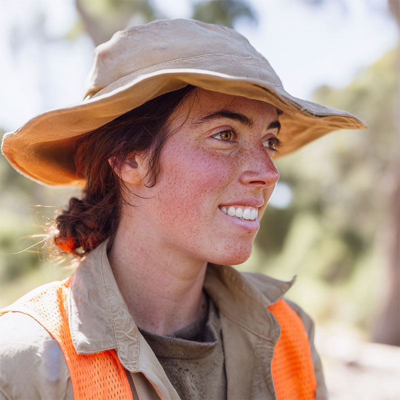

Name: Chloe Vance
Age: 22
Height: 5'6"
Last Seen: Tuesday, 4:30 PM
Location: Hawkesbury, NSW
Occupation: Horticulture Student
Chloe isn't the type to just disappear. She's a dedicated horticulture student. Yesterday she headed out before dawn on a field trip with two classmates, walking the country roads near the Hawkesbury to collect her samples. She even joked about wearing her bright reflective vest so the trucks wouldn't hit them. A normal morning. Three students and their field kits.
She never came home.
When I went to the police, they told me not to make a fuss. He said she probably just went camping. But her car was found abandoned out on one of the access roads near the river, and nobody will tell me anything.
If you were out near the Hawkesbury yesterday morning, or saw three students with field kits... please. If you saw a girl with a camera and a green backpack, contact me. I just want my sister back.
Please contact Jess Vance immediately.